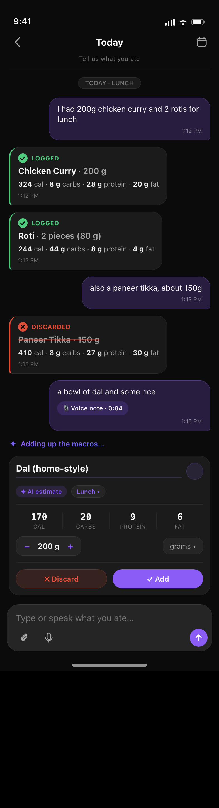
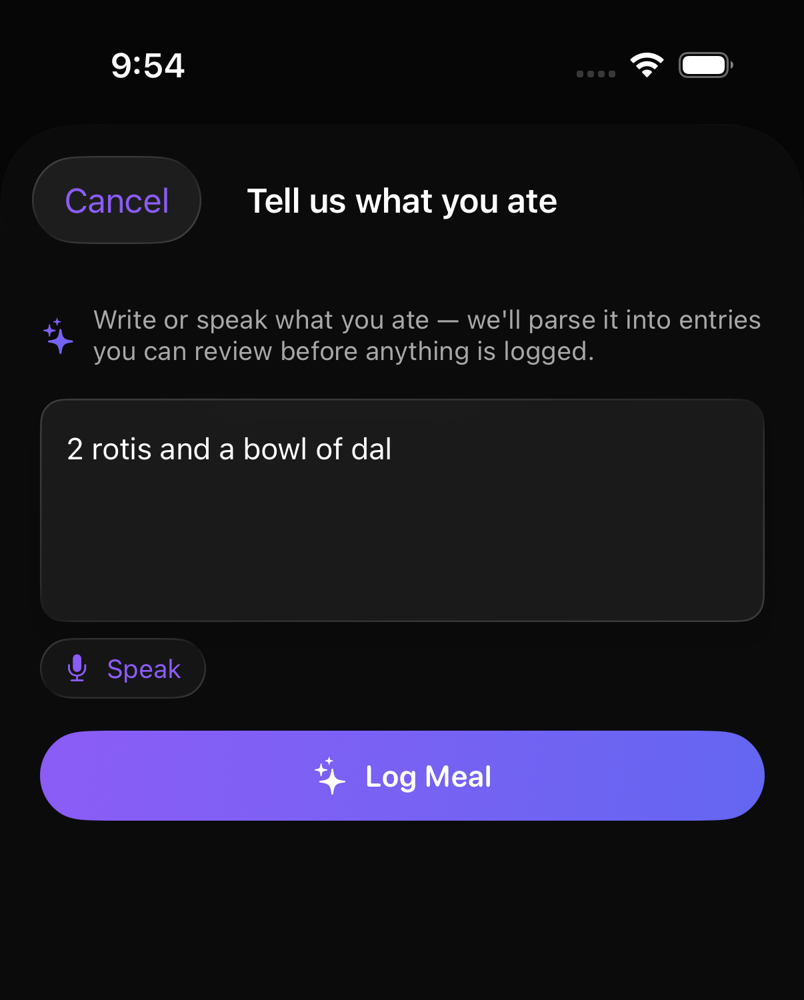
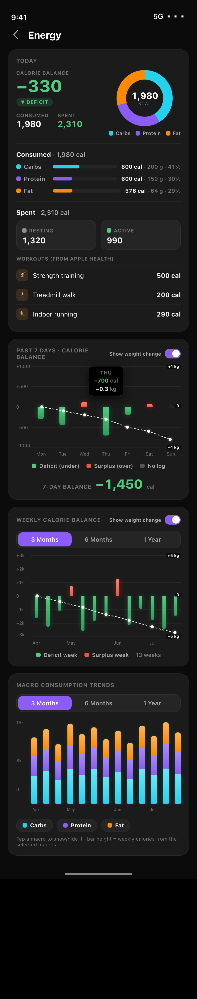
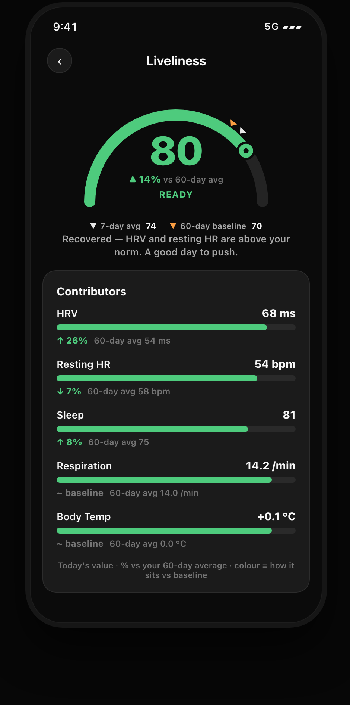
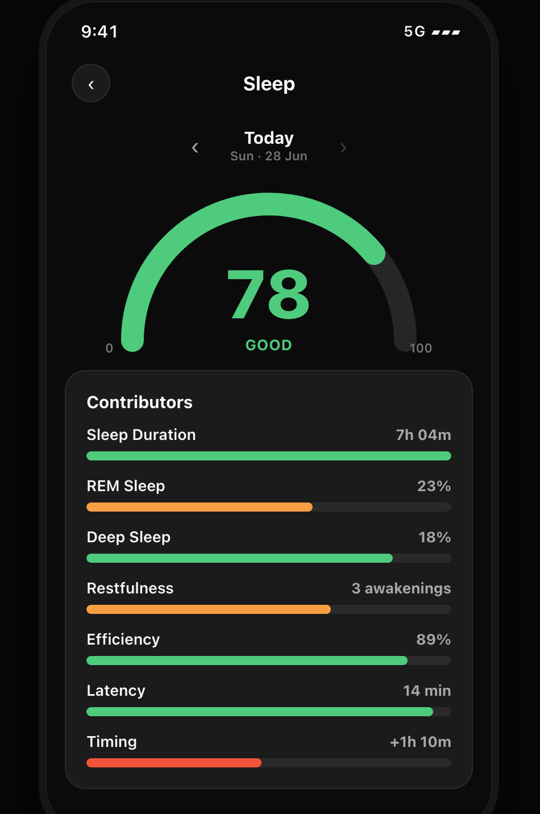

An AI-native health OS with persistent memory.
One coherent system that connects every signal from your body — food, biomarkers, sleep, recovery — and actually remembers who you are. Native to iOS 26, built evidence-first, engineered to stay cheap at scale.

A serious health routine today is a duct-taped stack of apps that neither remember you nor talk to each other. Sorir replaces the whole stack with one system.
Re-explaining your entire health history to a chatbot every single conversation. Its memory is conversation-bound; yours should be longitudinal.
Chat to estimate a meal, then re-enter it somewhere else. Two tools, one meal, every time.
Mentally stitching together recovery, sleep, blood panels and nutrition — work no single app will do for you.
Every signal lands in one open schema — so the AI can connect supplements to biomarkers to training load, over months, not messages.
Text + audio, never photos. Backed by a three-tier lookup so most meals never touch an LLM.
~40–45 markers in an open key-value schema. Reference ranges are optimal, not lab-default.
Two-stage: fast text extraction first, a vision-LLM fallback only for scanned, image-only reports.
HealthKit basics plus InBody PDF ingestion — segmental, ECW and visceral detail.
Self-logged and enriched by a reference database, so the AI can tie doses to changing markers over time.
Upload 12 months of blood panels and 26 body scans at once. One batched summary call — so the AI starts knowledgeable, not cold.
Not a hype coach. Every surface is evidence-based, grounded in your own numbers, and built to feel like it belongs on iOS 26.
The advisor assembles your full longitudinal context before it answers — profile, a rolling clinical summary, semantically-retrieved past events, and freshly-computed numbers. It's what a conversation-bound assistant structurally cannot do.
Type or speak a meal in plain language. A deterministic parser handles quantities, units and fractions first; a single cheap model call fires only when an item is genuinely ambiguous. On-device dictation commits each phrase and survives pauses.

Calorie balance, macros, workouts and multi-month trends — all read live on-device, with nothing stored as a stale total. Balance is simply consumed minus spent, computed the moment you look.

Liveliness is the hero metric of the Today screen: a 0–100 readiness score of you today versus your own 60-day baseline. HRV-led, with five contributors, so a normal day always anchors around the middle and a real change stands out.

A nightly composite sleep score against science-anchored targets, plus a background insight engine that reads across all six pillars and surfaces findings without being asked — the kind of cross-month synthesis no single app will do for you.

A native client, a dedicated serverless backend, and a Postgres brain — wired together so the AI is powerful, personal, grounded, and cheap. This is the part built to make an engineer lean in.
complete() · object() · objectFromImage() — one interface, provider-swappable · use-case → model table · hard paid-tier gate · per-call cost meterOne internal interface with adapters behind it, so the provider is a swap, not a rewrite. Every use-case points at a tier through a config table — any use-case can move to any model with no code change. JSON outputs are schema-validated; every call is metered for cost.
| Use-case | Tier | Model |
|---|---|---|
| food.estimate | cheap | gemini-2.5-flash |
| food.nl_fallback | cheap | gemini-2.5-flash |
| chat.advisor | capable | claude-sonnet-4-6 |
| insight.engine | capable | claude-sonnet-4-6 |
| lab.vision | max | claude-opus-4-8 |
Representative routing. Model IDs are stored without date suffixes; tierFor(useCase) falls back to cheap for any unknown key. The default posture: the cheapest model that's good enough, each use-case independently upgradable.
The moat isn't the model — it's what you feed it. A typical call assembles roughly 2,500 tokens of precisely-chosen context: cheap and deeply personalized at the same time.
≈ 2,500 tokens assembled per call — the difference between an assistant that remembers you and one that re-meets you every time.
Accuracy is the product. The model never sees raw rows — the database computes the numbers deterministically, and the model's only task is to explain them in plain language. Calorie math is Atwater-authoritative; matched foods are never recomputed by an LLM.
prompt = f""" Here are 4,000 raw rows. Please average the HRV, find the trend, and compute the deltas... """
-- SQL does the math avg_hrv = 68 ms trend_14d = +9% delta_vs_60 = +26% model: "narrate these numbers, clinically."
Cost-consciousness is a product feature, enforced in the gateway itself. Cheap-by-default routing, a hard paid-tier gate the free tier never crosses, on-device transcription with no per-minute cost, and a shared community cache that makes marginal cost per user fall as the base grows.
iOS 26-only, on purpose — no fallback code paths, so it can use Apple's newest frameworks first-class.
A DesignSystem module of glass cards and buttons, built before any screen. iPhone-only, iOS 26 floor.
The spine of the app. Apple Health is the source of truth; energy is written then read back to avoid double-counting.
Continuous dictation with requiresOnDeviceRecognition. Free, private, on-device.
Backend-issued access + rotating refresh tokens in the Keychain — no hosted auth URLs exposed to the client.
Serverless TypeScript, region-pinned, validated with Zod. The client never touches Postgres directly.
Multi-tenant with RLS as defense-in-depth. ~7,888 USDA + 502 Indian foods seeded.
One person, building a real multi-user product with a single "project brain" — code, specs and planning committed together — driven agentically with Claude Code, against numbered tickets with a plan and a summary each.
Behaviour is defined in specs before code exists; tests are written from the specs, never reverse-engineered from the implementation. Every feature ships against a numbered ticket — plan first, summary after.
Model selection is decided by running the real LLMs against a reference set and measuring. One estimation-tier A/B moved food macros from a pricey model to a cheap one on the evidence:
The number-one requirement was Liquid Glass fidelity — which is why it's native SwiftUI with an iOS 26 floor and no fallback code. A flowing figure that doubles as an “S” for শরীর — body — on pure black.
Deterministic-first everything. Atwater math is authoritative, matched foods are never recomputed by a model, and a failed LLM call becomes a clean error — never a fabricated zero-calorie card.
Cheap-by-default routing, a hard paid-tier gate, on-device transcription, and a cost meter on every model call. The architecture makes the cheap path the default path.
The system talks like a sports nutritionist who is also a data scientist. Reference ranges follow longevity and sports-medicine literature; the tone is centralized, versioned, and free of fluff.